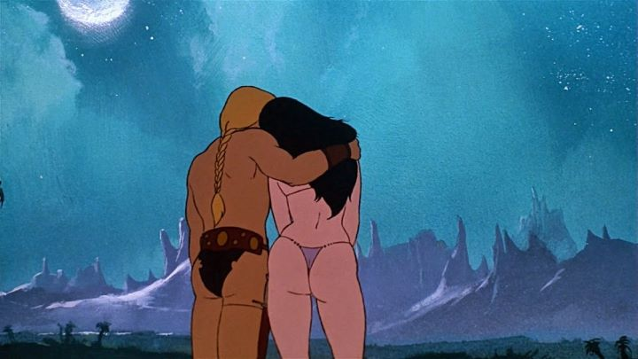

"Fire and Ice" was one of the last animated films directed by Ralph Bakshi, released in 1983. I have mixed feelings of Bakshi as a director: he is capable of directing great movies, but his style as an artist tends to push him into experimental stories, the kind that represent the era, that say something about the human race, but also make for horrible films. He has been a vocal fan of fantasy artist Frank Frazetta for a long time, and "Fire and Ice" is the result of their collaboration. While it isn't necessarily a great, or even a good, movie, there is something primal about it that speaks to me. And primal is exactly the right word.The movie should seem vaguely familiar, especially to older fans of fantasy and sci-fi fiction and comics. Think "Conan the Barbarian" and "Red Sonja," or "Tarzan" and "John Carter." Of even some old rock-and-roll album covers. These were represented by detailed, well-rendered paintings of muscular men and half-naked women, with grotesque monsters on every side. Frank Frazetta was one of the more well-known American painters creating those images, and the story of "Fire and Ice" feels like it was taken straight out of the books underneath those covers. Which is to say, it's an incredibly simple, but effective, fantasy. Set at an unspecified time in the past (possibly, a fantasy metaphor for the Ice Age), an evil queen and her son, Prince Nekron, use the power of ice to take over the land. The rest of the human race is pushed back to the safety of Firekeep near a volcano, but Nekron's massive glaciers, pushed by the power of his dark magic and mind powers, inch ever closer each day. After a failed attempt at peace by the Ice kingdom (by asking for unconditional surrender of their land), the Fire kingdom's beautiful Princess Teegra is kidnapped by the grey-skinned orcs under the Ice kingdom's rule. Teegra escapes, but in the dangerous wild, getting back safely isn't easy, requiring the help of two separate men, all while the Fire kingdom prepares to surrender for the sake of their Princess.Both the visuals and animation deserve plenty of discussion. Regarding the visuals... you'll notice that all the human characters are half-naked. Or rather, 90% naked. I'm talking loin-cloths, tightly covering their chests and buttocks, revealing much skin for both the muscular square-jawed men and muscular but well-"developed" women. The camera pans closely to their bodies are certain angles. Ralph Bakshi has never shied from sex in his movies before, but usually with exagerated cartoon designs that focus on the meaning rather than simply being sexual. Here, since the characters are rotoscoped on real-footage, the movie is the most sexually arousing moving he's made, even though explicit sex or rape doesn't take place on screen. Yes, the characters are rotoscoped. Bakshi clearly learned a lot from his work on the animated "Lord of the Rings" film, but while quality-checks were present there, here he is less restrained, for better and for worse. Character designs are uncanny, but not particularly attractive to watch. In motion, the animation varies greatly, from well-detailed and well-choreographed action scenes, to very limited and recycled animation. Typically, if the simplistic painted backgrounds are in the shot, the two clash while in movement, clearly not in the same plane of existance.  The bright spot comes from the prehistoric monsters encountered, mostly in the middle of the movie. Flying pterodactyls ridden by human warriors, giant squid, and massive man-eating lizards... yep, the jungles of this world are not safe for beautiful naked people. It's during these scenes that the film comes close to recreating the magic of the highly-detailed fantasy paintings they're inspired by. Of course, no frame of the movie is ever as detailed as the original paintings, as animating such a thing would be a nightmare. But the intent is appreciated.The acting of the movie is poor. Really poor, if only voice acting is considered. But this movie was rotoscoped, and as behind-the-scenes footage shows (the Bluray release is surprisingly full of these extras), many scenes were shot in live-action with actors in full costume. That extra effort required makes one appreciate the movie even more, being more forgiving of the acting performance given by every character.Along with movies like "Heavy Metal," "Fire and Ice" seems to represent a period of animation in the 80's that many still remember fondly, enough to make "Fire and Ice" an arguable cult classic among such fans. Bakshi is known as being a rock star of indie animation, and this movie is exactly the type of movie rock-and-roll fans will adore, perhaps best enjoyed alongside illegal substances that might have inspired the original story. It's not a particularly good movie, but there is something satisfying in its simplicity and raw, primal characters and violence. It has a place.
- "Ani" More reviews can be found at : https://2danicritic.github.io/ Previous review: review_Felidae Next review: review_Fire_Force